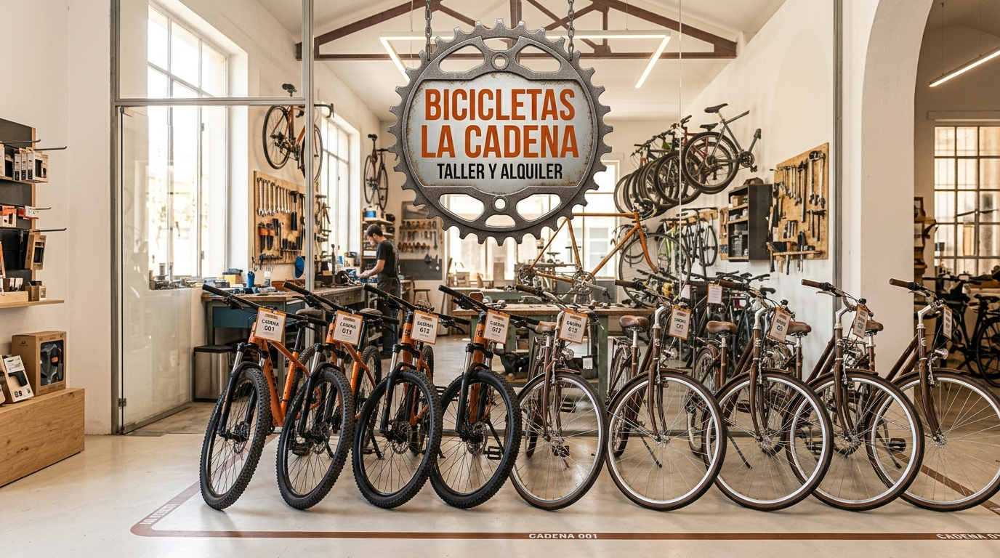

QUIÉNES SOMOS
En Bicicletas La Cadena arreglamos y alquilamos bicis desde
2009.
Somos Rosendo, Nando y Lucía. Te decimos el precio antes de tocar
nada y te lo explicamos en cristalino.
Bicicletas La Cadena llevamos desde 2009 dedicándonos con pasión al mundo de las bicicletas. Somos Rosendo, Nando y Lucía, un equipo que cree en la movilidad sostenible, en el valor de los pequeños talleres y en el trato cercano. Arreglamos todo tipo de bicis, desde las más clásicas hasta las más modernas, y también ofrecemos un servicio de alquiler pensado para quienes quieren recorrer la ciudad sin prisas, disfrutando del camino. Cada bicicleta que pasa por nuestras manos recibe la atención que merece, porque sabemos que no es solo un medio de transporte: es una compañera de aventuras, trabajo y libertad.
NUESTRO TALLER
Arreglamos todo tipo de bicis, también eléctricas. El presupuesto es gratis y sin compromiso. Los precios de las piezas van aparte.
En nuestro taller reparamos todo tipo de bicicletas, desde modelos clásicos hasta las más modernas bicis eléctricas.Nos encargamos de ajustes, mantenimiento, sustitución de componentes y cualquier avería que pueda surgir,
siempre con la máxima dedicación y experiencia.
Ofrecemos presupuesto totalmente gratuito y sin compromiso, para que puedas decidir con tranquilidad antes de
realizar cualquier reparación. Las piezas y recambios necesarios se cobran por separado, pero siempre
te informamos del coste antes de proceder. Nuestro objetivo es que tu bicicleta quede en perfecto estado y
que disfrutes de una experiencia segura y cómoda en cada pedaleo.


ALQUILER DE BICIS
Alquila una bici para recorrer la sierra. Casco y candado incluidos
Además del taller, La Cadena ofrece un servicio de alquiler que permite a cualquier
persona
moverse con libertad, ya sea para recorrer la ciudad, explorar zonas naturales o simplemente probar
una forma diferente
de desplazarse. Las bicicletas se entregan revisadas, ajustadas y listas para rodar, acompañadas de
los accesorios necesarios
para garantizar seguridad y comodidad durante el trayecto. Este servicio se ha convertido en una
opción ideal para quienes quieren
vivir la experiencia del ciclismo sin necesidad de tener una bici propia.